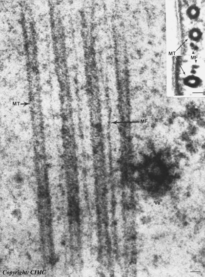

The cytoskeleton is composed of microtubules and actin filaments. These structures are composed of proteins. The cytoskeleton gives internal support and shape. For some single celled organisms, the cytoskeleton helps the organism to move. Cilia, and Flagella have microtubules inside of them. It is the microtubules which move the cilia and flagella.

| This is a transmission electron microscope (TEM) view of microtubules and actin filaments inside of a cell. The larger structures are the microtubules (marked MT). The smaller structures are the actin filament marked (MF). Notice in the upper right corner of the image, that microtubules are hollow and the actin filaments are not. |
 Return to the cell
Return to the cell